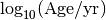

Stellar evolution models¶
At this moment two types of stellar evolution models are included in emcmass: MIST and YaPSI. to select which one to use you can provided the -model keyword when calling emcmass from the commandline or setting the evolution_model keyword when calling the emcmass.emcmass.MCMC() function.
The stellar evolution models are provided in fits files which all have the same structure. Each fits file containes all model for one initial metalicity. Only the model parameters (initial Mass, initial Metalicity and Age) together with several observable parameters are included in the fits files to save on disk space, and more importantly to increase the speed of the interpolation routines. All models are saved in Table format in fits files with the folowing column names
Mass_init the inital mass in M_H_init the initial metalicity [M/H] in dex log_Age logarithm of the age:  log_L logarithm of the luminosity: log_R logarithm of the radius: log_g logarithm of the surface gravity in cgi units log_Teff logarithm of the effective temperature in K M_H current surface metalicity [M/H] in dex Mass current mass in

MIST¶
MESA Isochrones and Stellar Tracks (MIST) is a large grid of single star stellar evolution models extending across all evolutionary phases for all relevant masses & metallicities calculated with the Modules and Experiments in Stellar Evolution (MESA) code. The MIST models included with emcmass code are calculated with MESA version v7503. A detailed description of these models is given in Dotter A. 2016 and Choi J. et al. 2016.
Parameter ranges¶
The mass range of the original MIST models reaches from 0.10 Msol till 200 Msol. For the purpose of emcmass however only the models with a mass between 0.10 and 10.00 Msol are included, with a progressive step size depending on the mass as:
Mass range Step 0.10 - 0.90 0.01 0.92 - 1.40 0.02 1.45 - 2.00 0.05 2.10 - 3.00 0.10 3.25 - 10.00 0.25
All models are calculated for metalicities varying between [Fe/H] = -1.00 – 0.50 in steps of 0.25, and lower metalicities [Fe/H] = -4 – -1 are provided in steps of 0.50.
The models are calculated for ages varying in log(Age/yr) = 5.0 - 10.3, in steps of 0.05. Obviously the heavier models don’t have such long lifetimes. The actually included ages for the included masses are given in the folowing figure:

YaPSI¶
The Yale - Potsdam Stellar Isochrones (YaPSI) is an extended set of stellar tracks designed with a denser grid in masses aimed at the precise determination of stellar parameters required in the characterisation of exoplanet hosts. This grid is an improvement of the Yonsei-Yale grid with a special emphasis on the construction of accurate low-mass models (< 0.6 Msol). The isochrones are calculated from the pre main sequence phase untill the tip of the first giant branch (RGB). A detailed description of the YaPSI models is given in Spada, F. et al.2017.
Parameter ranges¶
The masses of the YaPSI model range from 0.15 till 5.00 Msol, with progressive steps in mass:
Mass range Step 0.10 - 0.40 0.01 0.42 - 0.90 0.02 0.95 - 1.80 0.05 1.90 - 3.00 0.10 3.00 - 5.00 0.20
All models are calculated with metalicities [Fe/H] = +0.3, 0.0, -0.5, -1.0, -1.5, and varying Helium content Y = 0.25, 0.28, 0.31, 0.34 and 0.38. In emcmass only the models with Y = 0.28 are included.
Ages vary from the pre-MS till the tip of the RGB, which translates to log(Age/yr) = 4.0 - 10.49. The age distribution is taken as linear in natural logarithm as:
>>> ages = np.round( np.log10(np.e**np.arange(13, 24, step=0.01)), 4)
The dependence of maxiumum age for a given mass is shown below: